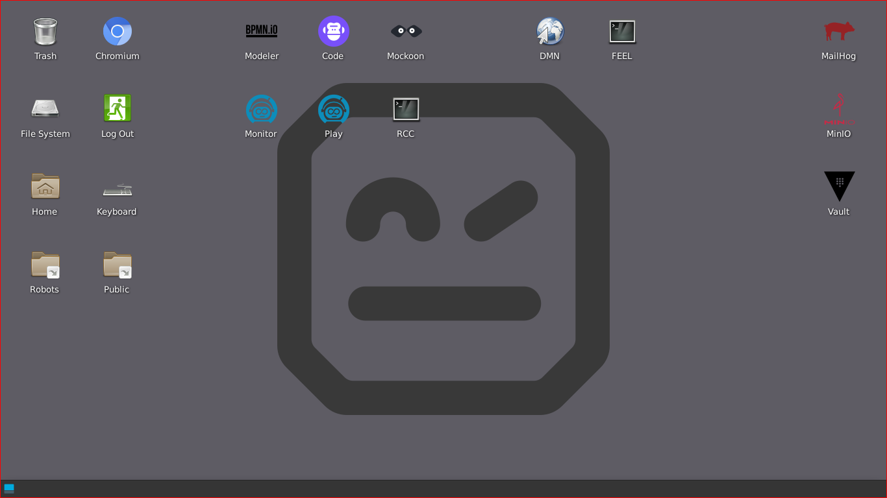

Open Automation Playground
Welcome! This is the documentation for so called Open Automation Playground: a preconfigured and opinionated virtual desktop for mostly open source process automation with Camunda Zeebe process orchestrator and Robot Framework with RCC toolchain (and parrot-rcc).
{kind=link}
The playground is a standalone virtual desktop environment and requires neither Camunda nor Robocorp Cloud to function. Robocon 2023 workshop participants will have access to dedicated cloud virtual machines with playground installed, but the playground is also avaible for VirtualBox with Vagrant.
Table of Contents
- Robocon 2023 Workshop
- Playground introduction
- BPMN basics by examples
- BPMN modeling exercises
- Camunda basics for execution
- Camunda execution exercises
- DMN, user tasks and forms
- DMN exercise with forms
- Service tasks for Robots
- Robocorp Code in action
- Exercise: PDF creation robot
- Exercise: Email sending robot
- Exercise: API consuming robot
- Exercise: Spreadsheet robot
- Exercise: Exception handling
- Extra: Classification training
- About Camunda Platforms
- Summary: Hello World